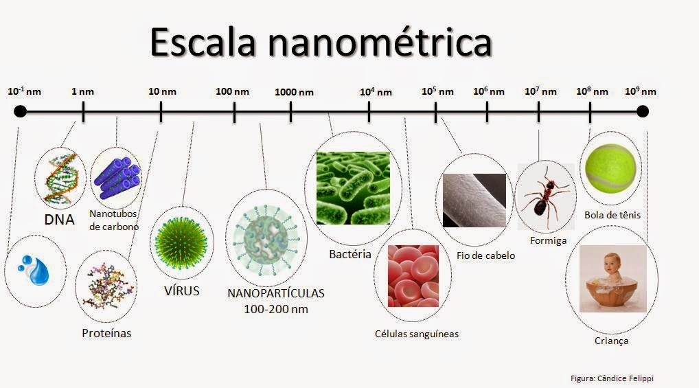

La nanotecnología en la medicina
Daniel Armando López Santos
Danielss360@gmail.com
Estudiante de Ingeniería en Ciencias y Sistemas - USAC
Palabras clave: Tecnología, nanotecnología, medicina, nanotubos, nanoestructuras, nanoparticulas.
La nanotecnología es una tecnología relativamente nueva que se basa en la manipulación de materia a escala nanométrica (Un nanómetro es la millonésima parte de un milímetro), esta tiene usos en la creación de componentes electrónicos, en el envasado de alimentos, etc.

Autor:Desconocido Dirección electrónica de la imagen: http://2.bp.blogspot.com/-4kEyCVc4Bx0/VFJ12pAD8\_I/AAAAAAAADfg/KVthPTF6XKo/s1600/escala%2Bnanometrica.jpg
{kind=link}
La nanotecnología ha sido posible gracias al desarrollo de las ciencias computacionales, porque es gracias a ellas que se pueden diseñar, analizar y estudiar materiales a escala nanométrica, por ejemplo, con ellas ha sido posible descifrar muchas cosas del genoma humano y con inteligencia artificial poder aprender de manera automatizada con base a patrones para detectar enfermedades; La creación de nanorobots que fue algo nunca imaginado en el pasado también ha sido posible gracias al avance de las ciencias de computación.
Los nanomateriales (Imagen 1) tienen propiedades especiales que no tienen materiales del mismo tipo, pero a diferente escala, por ejemplo en un material a escala nanométrica las propiedades eléctricas son modificadas haciendo que estas estructuras sean de entre semiconductoras a superconductoras; las propiedades mecánicas también son afectadas haciendo que las estructuras sean más fuertes y por ultimo las propiedades térmicas haciendo que resistan temperaturas más altas.
Autor:Desconocido Dirección electrónica de la imagen: https://nanova.org/wp-content/uploads/ejemplos-nanomateriales.jpg
{kind=link}
La nanotecnología en la medicina esta comenzado, y por las propiedades de los materiales nanométricos se tiene un futuro prometedor debido a que esta sería capaz de diagnosticar y prevenir enfermedades, así como también de curarlas a nivel molecular y celular. Una de las cuestiones más destacable es que entre los nanomateriales se encuentra el carbono y la aplicación de este sobre el cuerpo humano generaría menos toxicidad que otros materiales.
Las ventajas fundamentales de las nanopartículas son: mejor administración de fármacos insolubles en agua, administración dirigida, co-entrega de dos o más fármacos para la terapia combinada, y visualización del sitio de administración del fármaco mediante la combinación del sistema de imagenología y un fármaco terapéutico.
Otra ventaja del uso de la nanotecnología en la medicina es que las nanopartículas son biocompatibles y biodegradables y están compuestas de un núcleo, una partícula que actúa como portador y uno o más grupos funcionales sobre el núcleo que se dirigen a lugares específicos. La nanotecnología en la administración de fármacos incluye nanodiscos, nanoestructuras de lipoproteínas de alta densidad, liposomas y nanopartículas de oro. 1
Actualmente se realizan investigaciones de como poder curar y diagnosticar enfermedades como el cáncer por medio de la nanotecnología, porque podría mejorarse la solubilidad y biodisponibilidad de fármacos que son pobremente solubles, además de que se reducirían los efectos secundarios de las terapias anticancerígenas; Por ejemplo, recientemente científicos israelíes del Instituto Tecnológico de Israel (Technion) han logrado exitosamente erradicar un tumor canceroso en ratones (Imagen 3), combatiendo las células malignas del tumor usando una “nano-fábrica”, que es una célula sintética que produce proteínas anticancerígenas dentro del tejido.
Según lo comentado por dichos científicos en un comunicado acerca de la operación médica, las células sintéticas “son sistemas artificiales con capacidades similares y, a veces, superiores a las de las células naturales debido a que, así como las células humanas pueden generar una variedad de moléculas biológicas, las células sintéticas pueden producir una amplia gama de proteínas”. Además, agregan que las células sintéticas también “son sistemas que tienen un gran potencial en la disciplina de ingeniería de tejidos, en la producción de órganos artificiales y en el estudio de los orígenes de la vida”. 2
En la actualidad existen muchas investigaciones realizadas con la nanotecnología, como la aplicación de nanotubos (Imagen 2) para regeneración de los huesos o para la mejora de la conectividad en las neuronas, situaciones que hasta hace poco se encontraban solo en la ciencia ficción, por lo que esta tecnología se considera revolucionaria.
Autor:Desconocido Dirección electrónica de la imagen: https://nanotecnologia.fundaciontelefonica.com/wp-content/uploads/2013/10/carbon-nanotubes.png
{kind=link}
El mayor logro que tendrá la nanomedicina es la realización de tratamientos nanorobóticos en células individuales y específicas del cuerpo humano. Los nanorobots son máquinas a escala nanométrica que en la nanomedicina pueden ser usados para identificar y destruir células cancerígenas. Los nanorobots no son los robots convencionales que describe Isaac Asimov, quien formulo las tres leyes de la robótica, debido a que los nanorobots son básicamente partículas de diferentes materiales que desencadenan acciones ante determinadas sustancias, de esta manera dependiendo de la cantidad de sustancias y el orden que lleven se puede tener una secuencialidad de acciones específicas para cumplir una tarea.
Los nanorobots en la nanomedicina están basados en el ADN porque las propiedades de la estructura del ADN pueden ser utilizadas como contenedores de agentes terapéuticos que se liberaran una vez se llega a una diana (Objetivo órgano o célula).
Un ejemplo del uso de los nanorobots fue desarrollado por los científicos de la Academia China de Ciencias y la Universidad del Estado de Arizona, en donde los nanorobots se usaron para combatir tumores cancerígenos en animales; En este caso se programaron los nanorobots en función de eliminar el flujo sanguíneo que llega al tumor para bloquear el ingreso de nutrientes y así matarlo (Imagen 4). Para realizar esto los nanorobots debían seguir el siguiente algoritmo:
Viajar por el flujo sanguíneo.
Reconocer los vasos sanguíneos que llegan al tumor.
Diferenciar las células cancerígenas de las células normales.
Liberar un agente coagulante al llegar a su destino.
Autor: Desconocido Dirección electrónica de la imagen: Enlace
{kind=link}
Para realizar este algoritmo el equipo programo los nanorobots constituyéndolos por una lámina rectangular de ADN que fue doblada para formar nanotubos y que en su interior contendrían cuatro moléculas de trombina, una enzima coagulante. Por último, los nanorobots deben saber identificar su destino, es decir los tumores, de forma que cuando lleguen allí puedan activarse y realizar su trabajo; Para realizar esto se agregaron a las láminas aptámeros de ADN que son moléculas que reconocen la proteína nucleolina que es producida por los tumores en grandes cantidades (Imagen 5); De manera que la nucleolina sirva para activar los nanorobots que al detectarla su lamina regresa a su forma rectangular liberando las moléculas de trombina para iniciar el proceso de coagulación y parar el flujo de sangre al tumor.
Luego de aplicar el tratamiento, se verifico que el proceso de coagulación comenzó en un periodo de 24 horas a la vez que los nanorobots fueron desechados del cuerpo de manera natural casi en su totalidad en ese mismo periodo de tiempo, y el proceso de coagulación en los vasos sanguíneos del tumor finalizo en 3 días sin mostrar algún síntoma de toxicidad.
Autor: Desconocido Dirección electrónica de la imagen: Enlace
{kind=link}
Comentario Personal:
El uso de la nanotecnología en la medicina es algo trascendental en la historia de la humanidad, porque por primera vez el ser humano puede interactuar de forma molecular con células y moléculas específicas de manera individual, el hecho de programar nanorobots para que funcionen utilizando las leyes de la física y la química es algo impresionante pues sale de lo convencional en términos de lo que se conoce como programación. A la vez es importante resaltar que sin la existencia, desarrollo y avances de las ciencias de la computación la nanotecnología y por ende la nanomedicina no fueran posibles. La nanomedicina es un campo muy joven, pero con un potencial enorme, esta cambiará la manera en que vivimos, haciendo que la calidad de vida de las personas mejore exponencialmente, además de que nos hará comprender mejor la forma en que funciona la máquina del cuerpo humano.
Conclusiones:
El traslado de ciertos materiales a escalas nanométricas potencia las propiedades de dichos materiales.
La nanotecnología es un campo relativamente nuevo, que poco a poco se introduciendo en diferentes disciplinas como la electrónica o la medicina.
La nanotecnología y por tanto la nanomedicina son una causalidad del desarrollo y avances de las ciencias de la computación, pues es gracias a ellas que es posible desarrollar, diseñar y analizar materiales a escalas de nanométricas.
La nanomedicina será capaz de diagnosticar y prevenir enfermedades, así como también de curarlas a nivel molecular y celular.
Los nanorobots son máquinas a escala nanométrica que están diseñadas para realizar una pequeña y especifica tarea.
Las células sintéticas son pequeños sistemas a escala nanométrica que tienen las propiedades de una célula natural más otras propiedades, dependiendo de su diseño.
La programación de los nanorobots en la nanomedicina es basada en simular el comportamiento de los anticuerpos en los procesos naturales de curación; Y esta programación está en función de ejecutarse siguiendo las leyes de la física y la química.
Referencias:
- 1 Nanova